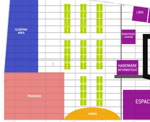

GAMING GEN 4 - 15 - 17 MAI 2015
Du 15 au 17 Mai 2015 à La Halle de Gardanne, l’univers du Jeu est à l’honneur : tournois et animations gratuites
Pour célébrer les 10 ans de sa 1ère aventure (CS Arena, Avril 2005, 60 joueurs), l’association Gaming Generation vous propose un événement inoubliable !
Tout l’univers du Jeu y sera représenté : une partie Festival (profitez d’une vingtaine de stands et d’animations gratuites pour tous) et une partie Tournois (200 joueurs vont se rassembler autour de 3 jours de compétitions acharnées).
Gaming Gen, le Jeu est dans nos gènes !
Le tournoi officiel, sur CS : GO, rassemblera 32 équipes de 5 joueurs. Toutes les informations ci-dessous...
TARIFS
EN PREVENTE : 15€
SUR PLACE : 20€
GRATUIT POUR LES FILLES
INFORMATIONS PRATIQUES ET HORAIRES DU TOURNOIS CS:GO
Horaires
La salle ouvre aux joueurs CS:GO dès le vendredi, 17h. Tu peux venir t'installer, jouer des matchs amicaux, participer à nos tournois funs du Vendredi soir (Magic, 1v1 CS, babyfoot, ...).
Le tournoi CS:GO officiel débutera le samedi matin, 10h30. Toutes les équipes devront être présentes et validées dès 10h00 !
La salle restera accessible la nuit aux joueurs uniquement (fermée pour les visiteurs).
Matériel nécessaire
Le tournoi étant un BYOC, il te faudra amener ton équipement complet :
Tour + écran + clavier + souris + tapis de souris + casque audio + cable réseau RJ45 + alimentations et périphériques + une multiprise.
Ton PC doit être entièrement à jour (Windows, Steam, anti-virus !). L'utilisation d'enceintes est interdite.
==>> Nous louons des tours + écrans, ensembles ou séparés. Contacte-nous pour en savoir plus.
Terro-éco-dodo
Une Sleep-zone sera aménagée au fond de la salle. Apporte ton matelas, duvet, oreiller et doudou si besoin.
Pour plus d'intimité, tu peux réserver un hôtel : Hôtel de Nice (à Gardanne) ou autres hôtels à Meyreuil, Aix en Provence et Plan de Campagne (tous à moins de 10 minutes).
Snack
Le réputé "Snack Gaming Gen" vous restaurera tout le long de l'événement : menus classiques (steak-frites, salades, pizza...) et un plat fait-maison, limité et différent à chaque repas : Daube vendredi soir, repas Nature & garrigue Samedi midi, Wok samedi soir et surprise dimanche midi... Nous vous proposerons aussi petits-déjeuners, gouters et toutes sortes de boissons chaudes et froides ("sans alcool, la LAN est plus folle").
Réservation table
Tu pourras réserver la table de tes rêves une fois que 3 joueurs de ton équipe ont payé leur prévente. Contacte nous via le formulaire pour préciser la table que tu désires, ainsi que le nom de ta team et le nom-prénom-pseudo des 5 joueurs.

N’oublie pas de venir avec le Règlement Intérieur + la Décharge Parentale signée si tu es mineur.
Dans tous les cas, n'oublie pas ta Carte d'Identité !
PARTENAIRES ET DOTATIONS DU TOURNOIS CS:GO
Cash-prize
2.200€* de cash-prize distribués aux 3 équipes vainqueurs, selon la répartition suivantes : 1ers : 1.300€ - 2nds : 625€ - 3èmes : 275€
*à 100% de remplissage du tournoi.
Partenaires Gaming
Hardware Informatique, Qpad, Antec, Gigabyte et Razer supportent la Gaming Gen 4. La liste définitive des lots sera annoncée prochainement.
Stay tuned !
Partenaires Festival
Des exposants à la Gaming Gen 4 participent également à la dotation du tournoi CS:GO, avec des lots funs et insolites, notamment la confiserie GAOIR et la Boutique du Geek.
LE LIEU
Avenue du 8 mai 1945
13120 Gardanne
QG de la Gaming Gen depuis toujours, cette salle de 3800 m² nous offre tout l’espace et l’infrastructure nécessaire pour mettre en place à la fois des tournois de qualité et des stands aérés.
Un coin Restauration complet, des sanitaires et des places de parking sont disponibles.


{kind=link}